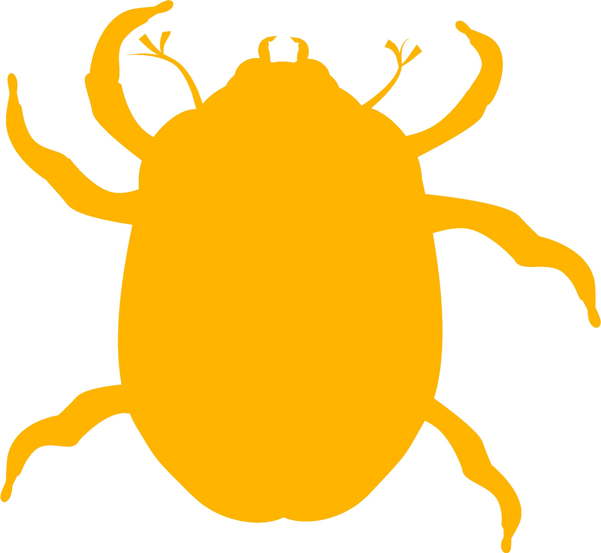
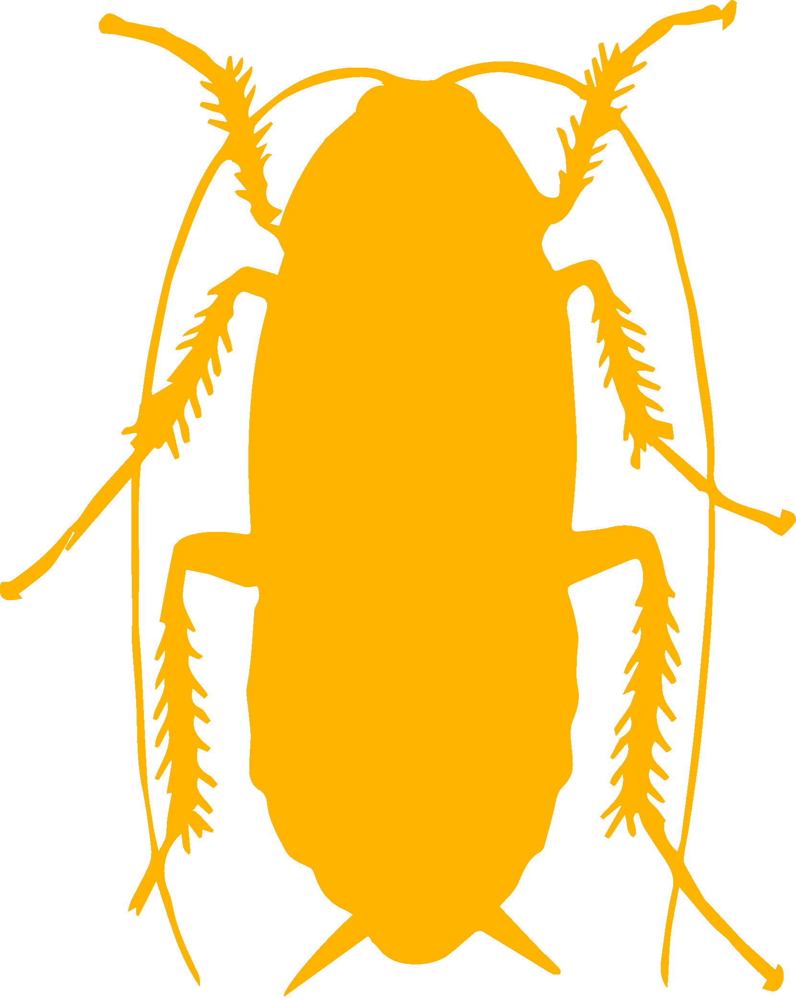
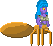
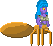

Live DevLog
| 15 Aug 2017 |
| 20:44:58 | JUDGMENT | SUCCESS!!! ;) |
| 20:44:52 | SITE | Added tag JUDGMENT |
| 20:10:33 | STATUS | It appears the Pathfinder now does it job....BUT, the data is not yet outputted... That is no trouble at all, really... I just need to work that one out PROPERLY :P |
| 20:09:46 | FIXED | Oh, that was easier to find than I though.... |
| 20:08:22 | BUG | Well it appears, the pathfinder could not find the way, even though it does not through any errors... |
| 20:07:57 | FIXED | bank issues |
| 20:03:42 | FIXED | import error |
| 20:01:02 | FIXED | Well I fixed that... |
| 20:00:56 | STUPIDITY | Forgot a very important function in the bank library |
| 19:56:57 | FIXED | Ah, the given variable was not nil. Another variable used to define it was thanks to a case error.... which has now been fixed. |
| 19:53:19 | FIXED | I've set this up hoping that will 'fix' all this... |
| 19:53:04 | TECHNO |  A in-array comparing... Always a problem, since BlitzMax fills the array with 0... Lua does not... A in-array comparing... Always a problem, since BlitzMax fills the array with 0... Lua does not... |
| 19:50:59 | BUG | Error: "LIBS/AS_PATHFINDER.LLL/ASTAR.LUA:329: attempt to compare number with nil" Yeah, what is the number, and what is the 'nil'? |
| 19:50:11 | FIXED | Casing fCost |
| 19:49:40 | FIXED | Casing hCost |
| 19:48:07 | CONFIRMED |  It did ;) It did ;) |
| 19:47:39 | FIXED | Will I've now made a manual default setting... This should set Lua right ;) |
| 19:44:29 | TECHNO | Aha.... I guess I see it... BlitzMax puts 0 in all integer variables not yet used... Lua does put 'nil' in those variables.... I guess the system didn't like that. |
| 19:42:51 | SITE | Added tag TECHNO |
| 19:41:54 | COCKROACH | fixing the casing error didn't fix the 'nil' though |
| 19:41:41 | STUPIDITY | I should NEVER forget to save |
| 19:40:40 | FIXED | Casing NewOpenListItemID |
| 19:39:30 | FIXED | Casing ParentXval / ParentYval |
| 19:38:35 | FIXED | Casing OpenX and OpenY |
| 19:37:31 | FIXED | that one! |
| 19:36:36 | BUG | As now another bug pops up but this error provides me ALL the information I need ;) |
| 19:36:21 | FIXED | gCost was the "evil" on that one |
| 19:35:31 | COCKROACH | The error persists though (was to be expected) |
| 19:35:08 | FIXED | another large scale case error fixed.... |
| 19:32:13 | BUG | Ah, now the array is deemed the 'nil'.... This will be harder to trace |
| 19:31:54 | FIXED | Another case error on global scale fixed |
| 19:26:56 | FIXED | Code typo (does not yet the problem as a whole, though). |
| 19:25:45 | FIXED | a case error (that would cause 'nil' values... Unfortunately, that was not the error I was looking for |
| 18:53:35 | BUG | I got this errorError: main.lua:79: Import runtime error:SCRIPT/ILOVEYOU.LUA
LIBS/AS_PATHFINDER.LLL/ASTAR.LUA:106: attempt to concatenate local 'd1' (a nil value)
stack traceback:
[C]: in function 'assert'
main.lua:79: in function 'j_love_import'
main.lua:346: in main chunk
[C]: in function 'require'
[string "boot.lua"]:428: in function <[string "boot.lua"]:274>
[C]: in function 'xpcall'
Unfortunately this error does not provide me enough information.I do have an idea what the "evil" may be, but not where it resides, and that is rather (bothersome). |
| 17:50:25 | FIXED | Another case error |
| 17:45:37 | FAILURE | unasked Unix shutout |
| 17:44:44 | FIXED | Yeah, that case sensitivity for ya... :( I think more issues due to this will come up since BlitzMax doesn't care about upper or lower case... Lua dues... |
| 17:42:54 | TEST |  ERRORTEST ERRORTEST (And an error was found). |
| 17:34:43 | TEST | Testing the tester |
| 17:33:54 | TEST | Right, the base has been set up for a test program.... It does not yet activate the pathfinder itself... But the pre-work is now done. |
| 11:57:51 | NOTE | I always have little time on Tuesday, and the test of the pathfinder will be a HUGE operation, so maybe I can do a little start tonight or otherwise tomorrow. |
| 11:18:27 | DONE |  taking a shower ;) taking a shower ;) |
| 10:42:34 | DEVLOG | Well Kthura's image will now appear every 25 posts (nor now), with a start countdown of 300 (the project has not yet begun). |
| 10:30:49 | ART |    Well I guess I had to make the base sprite anew (only to find back the original in less then minutes... wanna bet?) |
| 10:03:46 | GAMEJOLT |  The spammers set a new record today! The spammers set a new record today! |
| 14 Aug 2017 |
| 22:47:12 | BACKUP | And run the backup while resting.... |
| 22:47:01 | TODO |  Take a break Take a break |
| 22:44:00 | STATUS | And the test of the pathfinder will have to wait as well... Some complicated code will be required, and I need to do this well... |
| 22:43:24 | FAILURE | Looks like that one will have to be done completely from scratch..... sigh! |
| 22:37:29 | SEARCH | a full unix search then... Maybe it results into "something" |
| 22:33:08 | FAILURE | I did make a sprite base for Kthura, but the finder can't find it any more. Well, I've actually never been able to find anything with it, while it did exist, so that tells little, but it is a setback |
| 22:32:21 | SITE | Added tag SEARCH |
| 21:49:30 | KTHURA |  Now this may be a bit confusing, but this tag will be used for the Kthura Map Editor/Engine, and not for the character. Now this may be a bit confusing, but this tag will be used for the Kthura Map Editor/Engine, and not for the character.
The Map system was named after the heroine of this game (as this was supposed to be the first game designed with it. I guess something went wrong along the way) :P |
| 21:48:20 | SITE | Added tag KTHURA |
| 21:46:27 | DONE | Kept an old builder in order to make sure BallPlay Cupid can still be built in the future (in case some bugs are found there or some Anna updates needed a rebuild). |
| 21:44:15 | DONE | But not the new Love builder is there... (I think) |
| 21:43:38 | FIXED | Well I had to recompile EVERYTHING to fix that (sigh). |
| 21:28:46 | FAILURE | Oh yeah, the GALE module is causing conflicts again.... |
| 21:27:44 | ENHANCEMENT | I've added an "IMPORT" feature to the Love Builder. This can help me to separate demo and full version, and audio and nonaudio versions. |
| 21:15:12 | ENHANCEMENT | Well!
From now on I can announce that this way :P |
| 21:10:57 | SITE | Added tag ENHANCEMENT |
| 21:10:03 | DONE | An enhancement to BlitzMax TrickyMods Listdir module |
| 20:15:40 | CLEANUP | Some no longer needed files archived |
| 20:14:55 | SITE | Added tag CLEANUP |
| 20:12:13 | CONFIG |  Backup tool Backup tool |
| 20:03:30 | LUA | A quick fake banking system has been set up.
This has to make translating BlitzMax code to Lua possible without having to bother about banking. |
| 19:20:09 | STUDY | Lua file load |
| 13:41:54 | MISC | I guess this is one of the few times that finding a bug makes me happy :P |
| 13:41:33 | CONFIRMED | YAY! The "evil" has been found.... |
| 13:40:18 | BUG | Well, I'll look into that later, let's push this first |
| 13:40:03 | SOLVED |  I found out that there is a bug in the Devlog mixing up generation locations when multiple projects are being logged... I found out that there is a bug in the Devlog mixing up generation locations when multiple projects are being logged... |
| 13:35:51 | NOTE | But as I'm out of time I need to sort this out LATER |
| 13:35:41 | COCKROACH | Completely ignored! |
| 13:34:36 | TEST | Testing in 3-2-1... |
| 13:34:28 | FIXED | And recovered this tag as it didn't work properly it seems |
| 13:34:11 | INVESTIGATION |  Sorting out why things don't work Sorting out why things don't work |
| 13:34:00 | SITE | Added tag INVESTIGATION |
| 13:30:36 | FIXED | Anna icon |
| 13:29:02 | FIXED | Icon "Backup" |
| 13:25:00 | STATUS | Right, I do now have other, more pressing matters to attend to.
My true tests on testing the new lib may start tonight, and then it will be decided which engine I'll use.It doesn't matter what engine I use, as I will have to create a kind of "sub-engine" next. I will be back on the square on to set up my UI and story interpreter, but at least we then got a few things to get things onto the road, and the moment for the starting shot can then draw closer. |
| 13:21:23 | BACKUP | Running the back up, and about time too... |
| 02:07:54 | LUA | Right the pathfinder overall setting has been covered.... But after 2am I think I should go to bed before I actually test stuff out. |
| 01:27:03 | FIXED | the bmax https problem, but unfortunately Windows is the harder part. |
| 00:37:23 | STUPIDITY | SOMETHING had to go wrong here... :-/ |
| 00:35:03 | SITE | Added tag STUPIDITY |
| 00:26:46 | CONFIRMED | The prefix bugfix is now 100% confirmed |
| 00:26:07 | DEVLOG | "Done" and "Confirmed" use the same icon ... for the time being... |
| 00:25:03 | NOTE | But I need to test that out later |
| 00:24:53 | MAC |  At least for Mac At least for Mac |
| 00:24:49 | MISC | Well that shit should be working now |
| 13 Aug 2017 |
| 23:00:16 | MISC | Module rebuilding |
| 22:49:02 | CONFIRMED | Devlog Fix |
| 22:48:56 | SITE | Added tag CONFIRMED |
| 22:48:45 | TEST | Test |
| 22:45:07 | FIXED | An issue in the Devlog causing the "mix" the autoprefixes when switching between two devlog databases |
| 22:42:06 | GITHUB |  Cloning the newest version of Brucey's Blitzmax Modules. Cloning the newest version of Brucey's Blitzmax Modules. |
| 22:39:45 | SITE | Added tag GITHUB |
| 22:33:08 | STATUS | In order to put my mind on something else, I will now first have some rest a can o' coffee... If I can still put my mind to it I may investigate the GJAPI 'solution' |
| 22:29:54 | FIXED | Parse errors.... However this does not yet mean everything works as intended... There is still a lot to do here, but at least the conversion on A* is complete |
| 21:21:17 | LUA | AStar.lua is now complete, however I need to test it for parse errors. |
| 20:40:57 | LUA | And that concludes this particular function. I do see some poke and peeks. Something Lua does not support, but I think I can deal with it. |
| 20:40:30 | LUA | Step 10, 11 and 12 |
| 20:34:29 | LUA | Step 9 |
| 20:32:30 | LUA | the maker of the A* module in Blitz worked in steps.... Step 8 has been converted now. |
| 20:25:44 | LUA | More stuff taken care of |
| 20:24:17 | MISC | Well yeah I said I might have other things to do today |
| 13:40:14 | DEVLOG | More icon workout |
| 13:38:54 | REMOVED | False GameJolt tags |
| 13:38:46 | SITE | Added tag REMOVED |
| 13:32:12 | DEVLOG | xtra icons |
| 13:27:15 | TODO | But there's more :( |
| 13:27:10 | LUA | Some more code taken care off |
| 13:27:03 | STUDY | Lua |
| 13:27:00 | SITE | Added tag STUDY |
| 13:11:54 | DEVLOG | Some icons added |
| 13:09:17 | SOLVED | The Mystery I mentioned was just an internet connection error |
| 13:08:17 | SITE | Added tag SOLVED |
| 13:05:48 | DONE | Set up a planlist on #6 -- Nothing in there yet, but that will happen soon. |
| 13:05:28 | SITE | Added tag DONE |
| 13:01:00 | TODO | #5 -- And hopefully I can resolve PhantasarProductions/TFTRevamp#571 in the process |
| 13:00:19 | SITE | Added tag TODO |
| 12:55:51 | MYSTERY |  Hmmm.... It appears the linking routine in my devlog refuses to work... Interesting Hmmm.... It appears the linking routine in my devlog refuses to work... Interesting |
| 12:55:04 | SITE | Added tag MYSTERY |
| 12:54:04 | TEST | Hmmm? |
| 12:48:56 | LUA | The pathfinder I had was needlessly complicated. I'm now trying to convert the BlitzMax pathfinder I have into Lua, which is gonna be ONE HELL of an operation, so wish me luck :P |
| 11:53:18 | FAILURE | A complete OS Freeze prevented me from doing any work at all :( |
| 01:21:13 | MISC | Gonna call it. Maybe some work can be done tomorrow on experiments, but Sundays are not my friend when it comes to working on games... And since I do need rest also after TFT REVAMPED, maybe that's a good thing. |
| 00:29:09 | EXPERIMENT | A few experiments were done before, but the serious experimentation has yet to begin. |
| 00:26:48 | BACKUP | Well the backups will now be announced from THIS Devlog :P |
| 00:26:00 | SITE | Added tag BACKUP |
| 00:22:40 | SITE | Added tag EXPERIMENT |
| 00:16:47 | LINUX | And that also means for Linux that the outcome will heavily depend on the outcome of these experiments. |
| 00:06:56 | FIXED | Well that has been fixed now, and linking to issues works now. I'm gonna remove links to issues in the commit messages of this DevLog, as that was rather annoying. |
| 00:04:09 | SITE | Oh yeah, you can see that #4 does not yet create an issue link. That is because this devlog is not yet properly linked to the repository yet. I should fix that up asap. ;) |
| 00:03:15 | LOVE2D | Well to make my previous post a bit more clearer, if this pathfinder works then Love2D is a step closer to be th engine in which Mörker will be written. If all these attempts fail than Mörker will remain a LAURA II project as originally planned. Does not mean there is no role at all for Love2D in the process, but then not for the main game. Let's not go into that doom scenario yet, but the dicision #4 is about relies most of all on that one. |
| 00:00:52 | LOVE2D | A few things will be vital for Love2D.
As far as I coul find out, I cannot support viewport+tiling. The Kthura Map Editor relies pretty much on these things, but I can work around it, no problem. There are other things in Kthura working quite well on this department, although I need to make a few tiny updates to the editor.
Of course writing a library for Love2D supporting this will be a kind of a hassle, but that's doable.
My greatest concern is the lack of a pathfinder. Now Blitzmax doesn't have one natively either, and the one I had was actually written in BlitzBasic converted to BlitzMax by me.
The one for Lua looks a bit complicated. NEEDLESSLY complicated, I must say. My biggest challenge will be to get either this pathfinder, to work, to to do a SUCCESFUL attempt to get the BlitzMax pathfinder converted to Lua.
What we know is that both are based on the A* system, but that doesn't make the Lua path finder easier to understand. |
| 12 Aug 2017 |
| 23:51:00 | SITE | Added tag LOVE2D |
| 22:19:49 | FIXED | Okay, now it's working |
| 22:18:59 | COCKROACH | Okay, one icon is now really getting on my nerves. |
| 22:16:39 | FIXED | Two broken icons on this site |
| 22:12:47 | PHANTASAR | I must note that I am also working on correcting my newest manuscript, and getting that done is at the present time more important than this game. |
| 22:12:16 | SITE | Added tag PHANTASAR |
| 22:05:01 | FIXED | ANother QUicklink |
| 22:04:00 | FIXED | Quicklink |
| 20:53:08 | STATUS | Well overall this Devlog is at least ready for the challenge.... |
| 20:51:53 | SITE | Added tag STATUS |
| 20:50:19 | DEVLOG | Bug and cockroach icons |
| 20:41:02 | ANNA |  As far as this game is concerned... Anna will only be an achievement manager. As far as this game is concerned... Anna will only be an achievement manager.
It should be noted though that Anna can give points for Anna's Temple in The Fairy Tale REVAMPED if you do well in this game. |
| 20:39:13 | SITE | Added tag ANNA |
| 20:38:45 | GAMEJOLT | Yeah, this icon is there too. |
| 20:27:14 | FIXED | Color config devlog |
| 20:25:53 | IOS | When it comes to iOS, from Apple I know the terms, and I don't like them, so an official iOS version will never come to be
Since Love2D can be ported to iOS meaning the game can strictly run on iOS will will set the license that way that and iOS version can be possible.
That is (of course) ONLY if the game will be written in Love2D, as when LAURA II will be the engine then all hope an iOS version will happen is gone. |
| 20:23:27 | ANDROID | Well testing the icon Also it must be noted that an Android version will only appear if the choice for the engine is in the end Love2d. If the game will ever reach the playstore or not will heavily depend on the terms google dictates for that. |
| 20:18:45 | WINDOWS | test |
| 20:17:25 | MAC | Test |
| 20:10:28 | SITE | Added tag IOS |
| 20:10:23 | SITE | Added tag ANDROID |
| 20:10:20 | SITE | Added tag LINUX |
| 20:10:15 | SITE | Added tag MAC |
| 20:10:10 | SITE | Added tag WINDOWS |
| 20:09:17 | DEVLOG | Icon for "misc" |
| 20:07:25 | NOTE | Yeah, you surely didn't think I'd use a browser logo for that one, eh? |
| 20:07:08 | DEVLOG | Icon for "site" tag |
| 20:04:21 | FIXED | The Image prefixes from TFTREVAMPED got somehow in the Devlog for MÖRKER |
| 20:02:17 | SITE | Added tag SCREENSHOT |
| 19:52:22 | SITE | Added tag ITCH.IO |
| 19:52:15 | SITE | Added tag INDIEDB |
| 19:52:04 | SITE | Added tag GAMEJOLT |
| 18:55:02 | LUA | Well of course a tag named "Lua"... Mean mean two engines come to mind now and both engines use Lua as their scripting language :P |
| 18:53:29 | SITE | Added tag LUA |
| 18:50:35 | NOTE | Please note, this project has not yet begun... Only a few things that I need to take care of before the project can start may be logged here already. |
| 18:48:23 | DEVLOG | Well over time more will be added... :) |
| 18:48:12 | DEVLOG | Icon Test |
| 18:48:07 | DEVLOG | Icon Art |
| 18:32:09 | ART | I've been setting up a kind of background which may be used for some UI background art. |
| 17:18:06 | DEVLOG | Title changed |
| 17:15:06 | SITE | Added tag ART |
| 16:27:19 | FIXED | Completely, or at least it seems that way |
| 16:25:04 | TEST | Test |
| 16:20:40 | FIXED | A part of the problem |
| 16:13:11 | COCKROACH | Things are getting worse, so it seems |
| 16:13:01 | SITE | Added tag COCKROACH |
| 16:07:30 | BUG | Nope nope not :P |
| 16:07:14 | FIXED | Test |
| 16:01:44 | DEVLOG | I brought in a little enhancement to this Devlog (which I should already have put in during "The Fairy Tale REVAMPED", but hey, rather late than never), but it is not yet fully tested, so time will tell how this will work out :-/ |
| 16:00:41 | TEST | Test |
| 15:36:59 | INVESTIGATION | Right, let's try to see why this is happening |
| 15:36:49 | SITE | Added tag INVESTIGATION |
| 15:34:54 | FAILURE | Something went wrong I see... :-/ |
| 15:34:47 | SITE | Added tag FAILURE |
| 15:33:56 | NOTE | I still need to work some stuff out here, though... |
| 15:33:06 | DEVLOG | And with that the startup config appears to be working in the newly set up stuff, I suppose... |
| 15:32:44 | SITE | Added tag DEVLOG |
| 15:32:30 | SITE | Added tag TEST |
| 15:32:26 | SITE | Added tag NOTE |
| 15:32:01 | SITE | Added tag FIXED |
| 15:31:50 | SITE | Added tag CONFIG |
| 15:31:30 | SITE | Added tag BUG |
| 15:31:13 | MISC | DevLog settings reset.... Was needed in this DevLog to allow some new functionality |
| 15:30:39 | SITE | Added tag MISC |